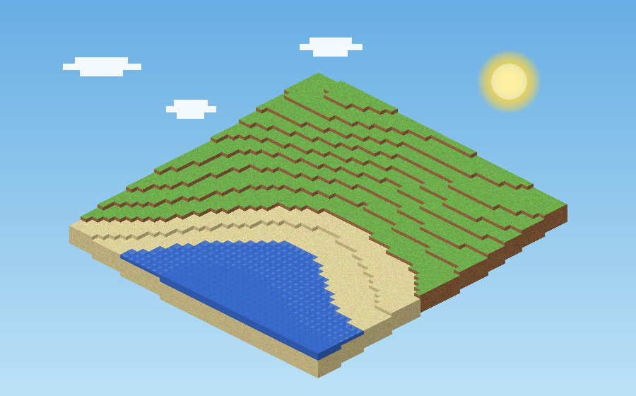
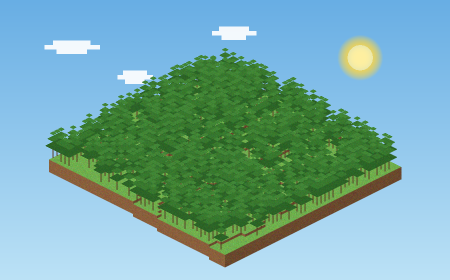
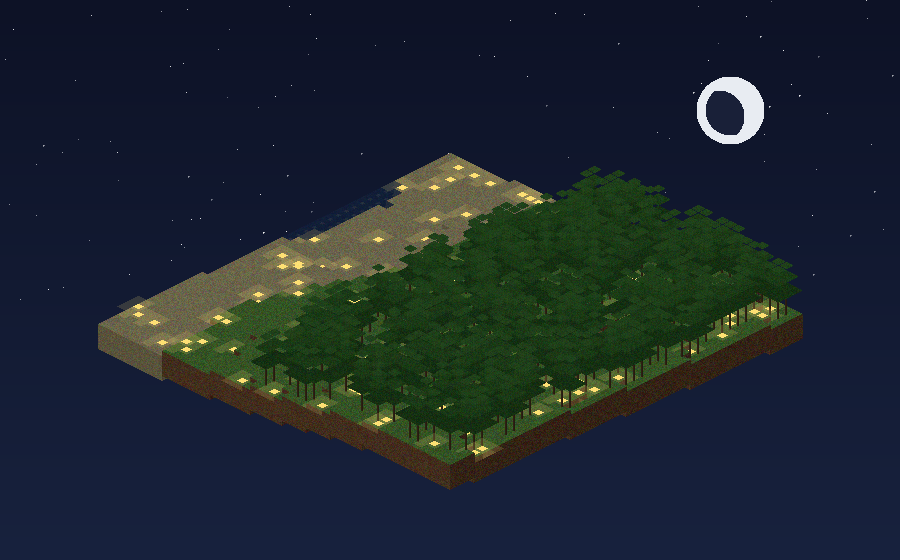

WebCraft는 클릭 한 번으로 시작하는 블록 샌드박스 게임입니다. 땅을 파고, 집을 짓고, 동물을 사냥하고, 밤이 되면 어둠 속에서 몹들이 나타납니다. 다운로드도, 회원가입도 필요 없습니다.
가벼운 웹 게임이지만, 샌드박스의 핵심은 모두 갖췄습니다
시드 기반 노이즈로 산, 바다, 해변, 숲, 동굴이 펼쳐집니다. 걸어가면 청크가 계속 생성되는 오픈 월드.
좌클릭으로 캐고 우클릭으로 쌓습니다. 서바이벌에선 캐낸 블록만 쓸 수 있고, 돌은 조약돌로, 잔디는 흙으로 떨어집니다.
해가 지면 좀비·스켈레톤·거미가 어둠 속에서 나타납니다. 낮이 되면 햇빛에 타오르니, 밤새 버텨보세요.
B키로 블록 상자를 열어 9개 슬롯에 원하는 블록을 배치하세요. 휠과 숫자키로 빠르게 교체할 수 있습니다.
캐낸 블록과 고기가 스택으로 쌓이는 9슬롯 핫바. 크리에이티브에선 B키 블록 상자에서 원하는 블록을 바로 장착할 수 있습니다.
돼지·소·양·닭이 초원을 돌아다닙니다. 사냥해 얻은 고기를 우클릭으로 먹으면 배고픔이 회복되고, 잘 먹으면 체력도 재생됩니다.
체력·배고픔을 관리하며 사냥하고 밤을 버티는 서바이벌. 무한 블록과 비행의 크리에이티브. 시작 화면에서 선택하고 언제든 전환하세요.
아래 장면은 전부 게임 엔진의 실제 지형 생성기로 렌더링한 것 — 스크린샷이 아니라 약속입니다



복잡한 튜토리얼은 없습니다. 클릭하고, 걷고, 부수고, 쌓으면 끝
| W A S D | 이동 |
| Space | 점프 / 수영 / 비행 상승 |
| Shift | 달리기 / 비행 하강 |
| 마우스 | 시점 회전 (포인터 잠금) |
| 좌클릭 | 블록 캐기 / 몹 공격 |
| 우클릭 | 블록 놓기 / 음식 먹기 |
| 휠 · 1~9 | 핫바 아이템 선택 |
| F | 비행 모드 (크리에이티브) |
| Esc | 일시정지 · 저장 · 모드 전환 |
새 월드를 만들 때 시드를 직접 입력하거나 랜덤으로 떠나갈 수 있습니다. 같은 시드는 항상 같은 지형을 만듭니다.
나무를 캐서 판자를 만들고, 근처 돼지 한 마리를 잡아 저녁을 해결하세요. 밤이 오면 어둠 속에서 몹들이 나타납니다.
땅속에는 동굴이 숨어 있습니다. 발광석을 들고 내려가면 지하 세계가 펼쳐집니다. 물속에선 공기 방울을 챙기시고요.
WebCraft는 한 페이지짜리 프로토타입에서 시작했습니다
HTML 파일 하나에 전부 들어간 미니 샌드박스. 48×48 고정 월드, 색상 블록 7종, 이동·점프·채굴·설치만 있는 최소 버전.
→ prototype.html 직접 실행해 보기청크 기반 무한 월드, 절차적 픽셀 텍스처, 나무·바다·동굴 지형, 낮밤 사이클, 블록 상자, localStorage 저장 시스템, 비행 모드, 로직 테스트 자동화까지.
→ play.html?v=20260920-ui에서 플레이체력·배고픔·공기(익사) 시스템, 사냥 가능한 동물 4종과 6종 음식, 밤에만 출현하는 좀비·스켈레톤·거미(낮에는 불탐), 아이템 드롭과 스택 인벤토리, 추락 데미지·재생·사망/리스폰, 게임 모드 선택.
→ 서바이벌로 시작하기모바일 터치 컨트롤 · 인벤토리와 아이템 드롭 · 시드 공유 링크 · 생물과 몬스터 · 멀티플레이 실험